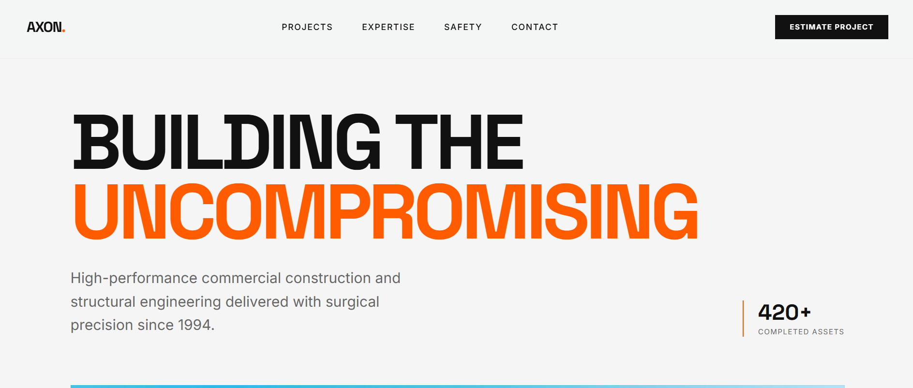
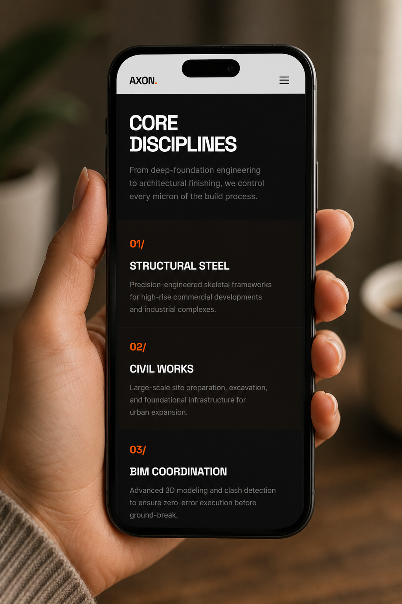

Website development - Illustrative case study
Axon Constructions
A refined WordPress website concept for a construction company, designed to turn a strong visual identity into a clear, credible online experience.


A digital front door with the same care as the work inside.
Axon Constructions needed a site that could present its services with confidence, give prospective clients a simple path to enquire. The concept pairs a calm layout with a WordPress content structure the team could maintain without developer support.
02 Challenge
Make quality feel immediate-without making visitors work for it.
- Distil several specialist services into a clear offer
- Balance an image-led brand with practical conversion paths
- Create a flexible, editable system for future projects and articles
We shaped the site around the questions a prospective client needs answered: what Axon Comnstruction does, who it is for, why its approach is different, and how to begin. Service pages use structured calls to action; project pages support visual storytelling; an SEO-ready journal creates room for long-term discoverability.
04 Expected impact